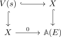
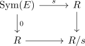

regular map of a quasi-coherent module
Definition
Let $X$ be a scheme and $E$ a quasi-coherent module over $X$. Then a map $s: E \rightarrow \mathcal{O}_{X}$ is called regular if the induced square

Affine case
In the affine case, this simplifies to

being tor independent.